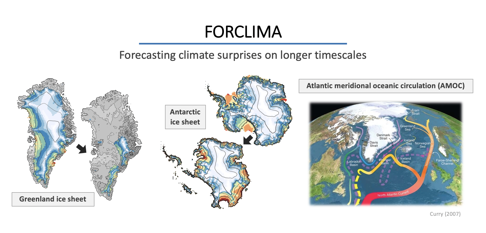
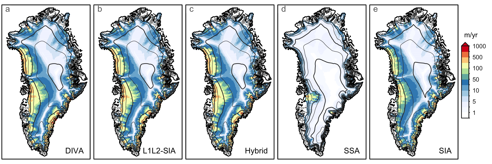
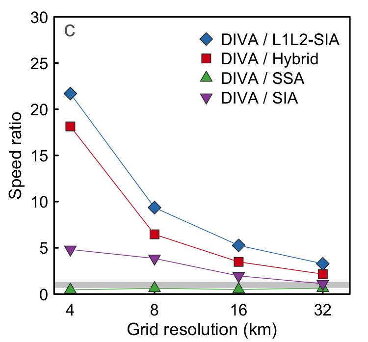
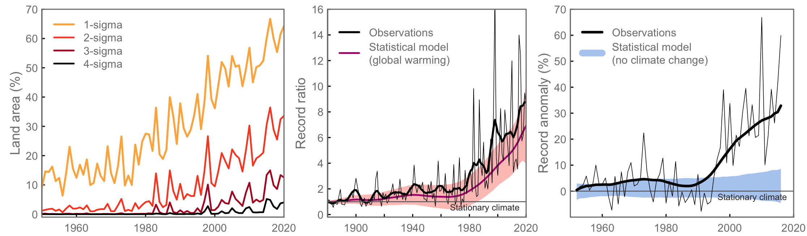

News
2022-03-17: ERC Consolidator grant project FORCLIMA funded

Tipping elements to be investigated in FORCLIMA.
Project abstract
The Greenland and Antarctic ice sheets (GrIS and AIS, respectively) and the Atlantic Meridional Overturning Circulation (AMOC) are prominent examples of tipping elements in the Earth system that have the potential to respond nonlinearly to small changes in forcing. Tipping elements can thus give rise to climate surprises, i.e., low-probability, high-impact events that may be triggered earlier than expected. Simulating such climate surprises and their impacts, on the relevant multi-centennial timescales and beyond, is particularly challenging. Today, the right methods are not available, resulting in deep uncertainty in future projections. Here I aim to develop a novel, probabilistic methodology to robustly forecast climate surprises such as ice-sheet and AMOC collapse on long timescales. This requires simultaneous advances beyond the state of the art on two fronts. First, a new generation Fast Earth System Model (FESM) will leverage the latest advances in our understanding of key processes to represent the GrIS, AIS and AMOC realistically, in a coupled framework and on long timescales. Critically, this will be the first comprehensive model fast enough to run the large ensembles of simulations needed to quantify the uncertainty associated with deeply uncertain processes. Second, a highly novel and generalized probabilistic approach will be developed, to constrain the FESM to be consistent with output from the latest generation of Earth System Models. FORCLIMA will generate probabilistic estimates of climate surprises for the medium-term future (centuries to millennia) with much higher confidence than we have today, and inform about interactions between key tipping elements in the climate system. This project will therefore greatly advance the state of the art in coupled climate – ice-sheet modeling, and lead to an unparalleled understanding of the long-term impacts of climate change on the Earth system.
Cordis link: https://cordis.europa.eu/project/id/101044247
2022-02-25: Performance of ice-dynamics solvers
Five ice-dynamics solvers were implemented in Yelmo and tested for numerical performance. The DIVA solver comes out as the clear winner, especially as resolution increases.

The Greenland ice sheet simulated with five different ice-dynamics solvers.
Analytical results combined with numerical simulations show that the Hybrid and L1L2-SIA solvers maintain a quadratic dependence of the maximum stable timestep with grid resolution, while the DIVA and SSA solvers can use much larger timesteps and remain stable.

Ratio of model performance (speed) for different solvers compared to the DIVA solver.
2021-10-05: Increasing heat and precip. extremes
Three methods for examining climatic extremes over the historical period were updated to include data from the last decade (2011-2020). The analysis shows that, particularly in the tropics, the mean climate has shifted by four standard deviations away from the historical average - a level of warming that would be essentially impossible to access without anthropogenic climate change. Meanwhile monthly temperature records are being broken consistent with a simple statistical model that attributes the excess records to global warming. In addition, 1-in-4 rainfall records in the last decade can be attributed to climate change. As temperatures continue to increase, these unprecedented changes will expand into higher latitude regions too.

Different indicators of the changing frequency of extremes in a warming climate over the historical period until 2020. See publication for details.
Robinson, A., Lehmann, J., Barriopedro, D., Rahmstorf, S. and Coumou, D.: Increasing heat and rainfall extremes now far outside the historical climate, NPJ Climate and Atmospheric Science, 45, 1-4, doi:10.1038/s41612-021-00202-w, 2021.
Other links
Nota de prensa de la Universidad Complutense de Madrid.
Press release from the Potsdam Institute for Climate Impact Research